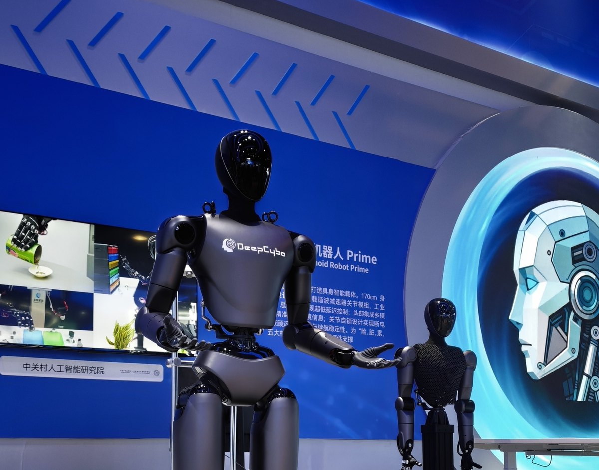
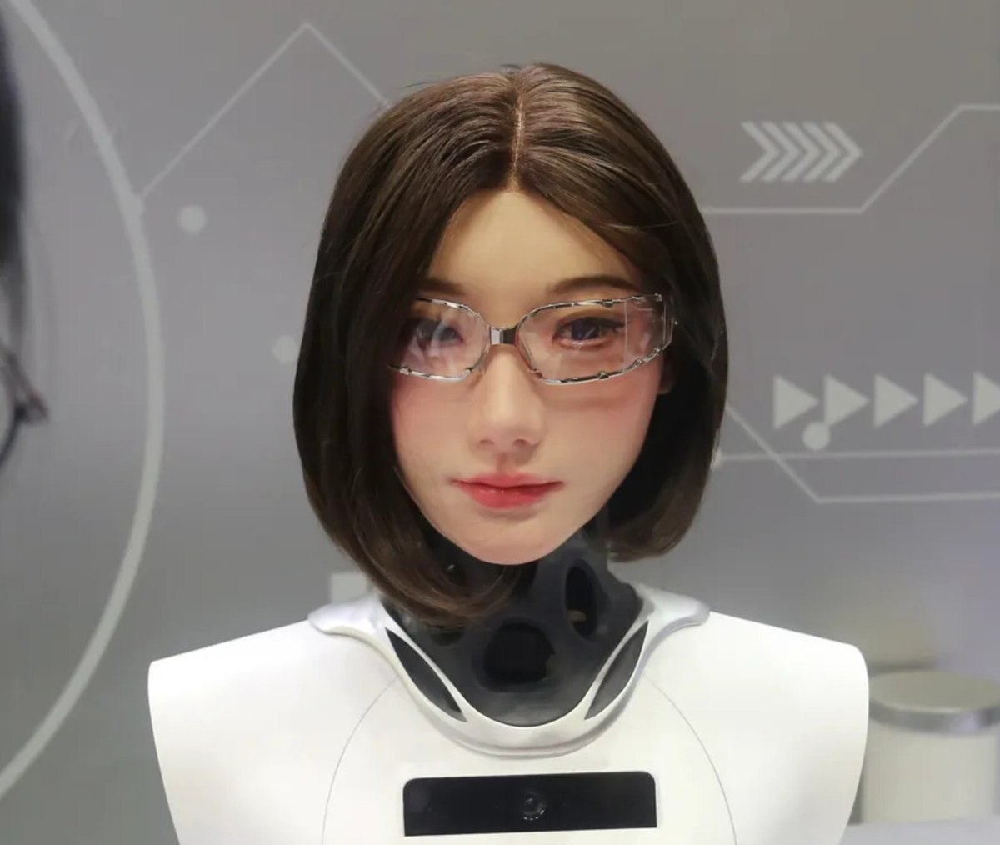

Humanoid RL Motion Control
Unitree G1 soccer and PRIME manipulation workflows spanning motion capture, retargeting, policy training, physics calibration, and ONNX deployment.
Robotics, Reinforcement Learning, Embodied AI
I work on humanoid robot motion control, spatial representation rewards for vision-language-action policies, and simulation-to-real workflows for embodied intelligence.

Research Agenda
Unitree G1 soccer and PRIME manipulation workflows spanning motion capture, retargeting, policy training, physics calibration, and ONNX deployment.
SpaRe-lite style offline reinforcement learning with spatial representation rewards on OpenVLA-OFT, SimpleVLA-RL, and LIBERO-10.
Leak-safe validation, simulation-built rollout data, and benchmark-driven iteration for robotics, financial prediction, and generative SVG systems.
Selected Work
Reinforcement learning motion control for humanoid robots, including Unitree G1 soccer and PRIME upper-body dexterous manipulation validation.
Led an EECS 545 final project exploring offline RL under limited compute to test spatial reward gains on sparse-reward manipulation tasks.

Industrial design background in humanoid and biomimetic robot products, now folded into embodied AI research, robot form factors, and deployment constraints.
Writing and Community
Competitions
Timeline
University of Michigan, School of Information, M.S. in Information.
Zhongguancun Academy x Zhongguancun Institute of Artificial Intelligence, PRIME humanoid robot body design.
Tsinghua University, Academy of Arts and Design, B.A. in Industrial Design.